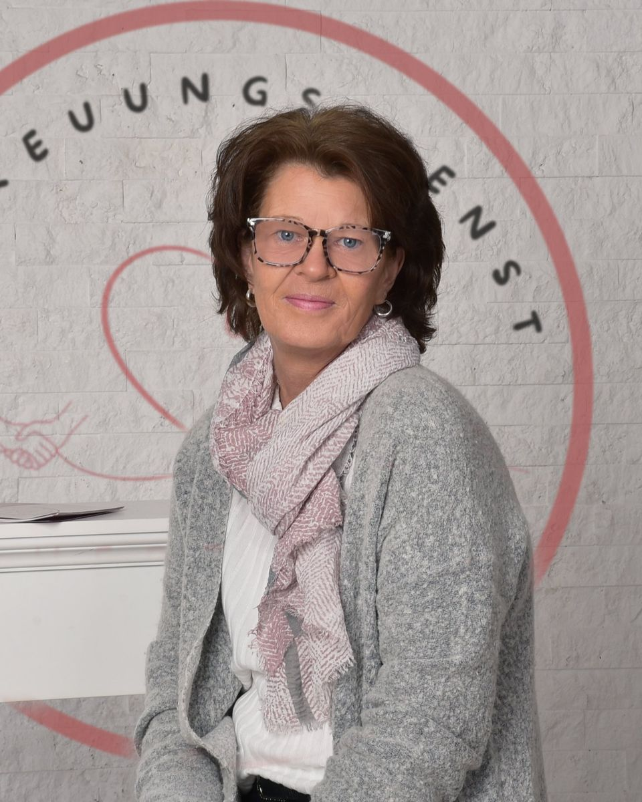
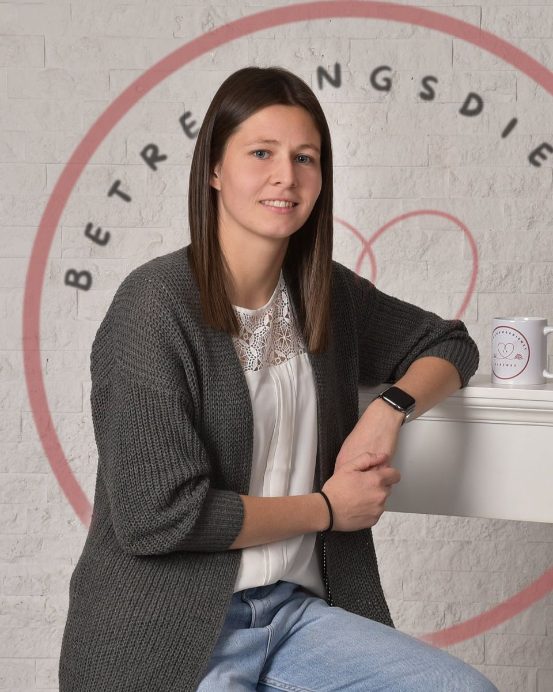
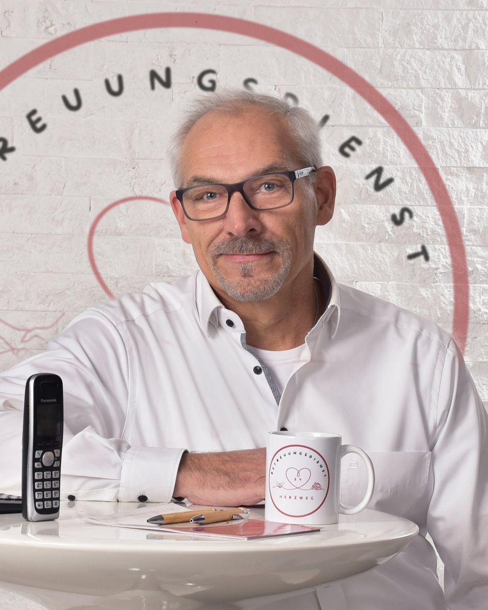

Nach dem Krankenhaus
Die Entlassung steht bevor, aber allein klappt der Alltag noch nicht.

Wir vermitteln Betreuungskräfte, die bei Ihren Angehörigen einziehen. Persönlich begleitet von uns, einer Familie aus Ammerthal.
Eine 24-Stunden-Betreuung hilft, damit Ihre Angehörigen in ihrem Zuhause bleiben können.
Die Entlassung steht bevor, aber allein klappt der Alltag noch nicht.
Ihre Mutter oder Ihr Vater braucht Orientierung und jemanden, der rund um die Uhr da ist.

Sie pflegen selbst und merken, dass es so nicht weitergehen kann.
Sie lebt mit im Haushalt und ist da, bei den kleinen Handgriffen genauso wie in schwierigen Momenten.
Medizinische Behandlungspflege wie Spritzen oder Wundversorgung übernimmt weiterhin Ihr ambulanter Pflegedienst.
Nicht jede Situation ist auf Dauer. Eine Betreuungskraft unterstützt auch für einen begrenzten Zeitraum, zum Beispiel für acht Wochen.

Vom ersten Anruf bis zur Anreise begleiten wir Sie persönlich.
Erzählen Sie uns kurz, worum es geht. Kostenlos und unverbindlich.
Wir lernen Ihre Angehörigen kennen und besprechen in Ruhe, was gebraucht wird.
In 5 bis 10 Tagen oder zu Ihrem Wunschtermin. Wir bleiben die ganze Zeit Ihr Ansprechpartner.
Ein Familienbetrieb, entstanden aus eigener Erfahrung.
Als in unserer Familie Pflege nötig wurde, haben wir erlebt, wie viele Fragen offen bleiben und wie schwer gute Hilfe zu finden ist. Deshalb haben wir Herzweg24 gegründet.
Alexandra bringt über acht Jahre Erfahrung aus der Pflege mit, Elena ist Sozialpädagogin. Gemeinsam mit Ralf sind wir Ihre festen Ansprechpartner.



Jede Situation ist anders, deshalb gibt es keinen Pauschalpreis. Nach dem Beratungsgespräch erhalten Sie ein klares Angebot.
Gut zu wissen: Ab Pflegegrad 2 zahlt die Pflegekasse Pflegegeld. Viele Familien nutzen es, um einen Teil der Betreuung zu finanzieren.
Zum Beratungsgespräch kommen wir im Umkreis von etwa 50 km um Amberg zu Ihnen. Betreuungskräfte vermitteln wir in ganz Deutschland.
Amberg, Ammerthal, Sulzbach-Rosenberg, Hirschau, Schwandorf, Burglengenfeld, Nabburg, Neumarkt i. d. OPf., Weiden i. d. OPf., Auerbach i. d. OPf. und Hersbruck
Eine Betreuungskraft wohnt mit im Haushalt Ihres Angehörigen und unterstützt im Alltag und bei der Grundpflege. Sie hat geregelte Pausen und Freizeit, ist aber im Haus und damit da, wenn sie gebraucht wird.
In der Regel innerhalb von 5 bis 10 Tagen nach dem Beratungsgespräch. Wenn Sie einen festen Starttermin brauchen, zum Beispiel die Entlassung aus dem Krankenhaus, planen wir darauf hin.
Ein eigenes Zimmer für die Betreuungskraft, einen Internetzugang sowie die Mitbenutzung von Bad und Küche.
Üblich ist ein Wechsel alle 2 bis 3 Monate. Wir begleiten jeden Wechsel persönlich.
Ja, die Grundpflege wie Waschen, Anziehen und Hilfe beim Toilettengang. Medizinische Behandlungspflege wie Spritzen oder Wundversorgung übernimmt ein ambulanter Pflegedienst.
Im Umkreis von etwa 50 km um Amberg, zum Beispiel in Sulzbach-Rosenberg, Schwandorf, Neumarkt und Weiden. Außerhalb davon vermitteln wir ebenfalls und beraten Sie telefonisch.
Kostenlos und unverbindlich. Wir hören zu und sagen Ihnen ehrlich, was möglich ist.
09628 7409897